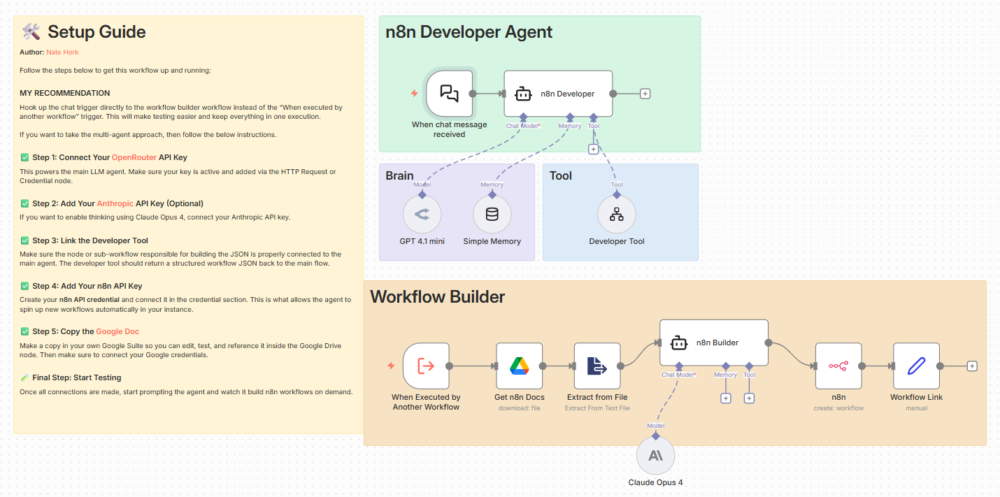

🛠️ An Agent that Creates Other Agents
Automating the Automation Layer
🔀 Workflow: Workflow Creator
Most automation journeys begin with excitement and end in friction. Automation workflows in n8n are no exception. They start the same way.
- You open n8n with a clear idea in mind.
- You drag a trigger.
- You connect a few nodes.
- Then few minutes later, you’re deep in credentials, API docs, edge cases, and “why is this node not working?”
You know what you want to automate. But within minutes, you’re buried in node selection, credential setup, branching logic, and half-remembered documentation. The problem isn’t automation itself — it’s the setup cost that sits between an idea and a working system.
This blog came from a simple question:
What if an agent could design workflows the same way an experienced automation engineer does?
That question led to an agent that doesn’t just run automations — it creates them.
Instead of you building workflows, you describe what you want, and an AI agent builds that workflow for you — correctly, structurally coherent, importable, and ready to run.
That’s exactly what this blog is about.
This is an Agent that creates other agents.
Why Build an Agent Like This?
As workflows grow more complex, the design becomes the bottleneck.
- What trigger should I use?
- How should nodes connect?
- Which credentials are required?
- Where should logic branch?
- How do I structure reusable sub-workflows?
These decisions slow people down, especially newcomers to automation.
The Workflow Creator Agent solves this by acting as an AI automation engineer inside n8n.
You give it a natural-language request.
It returns a fully formed n8n workflow JSON, ready to be imported or even created automatically via the n8n API.
From “How Do I Build This?” to “Build This for Me”
When humans design workflows, we translate intent into structure. We decide which trigger makes sense, how data should flow, where errors might occur, and which tools belong together. Over time, these decisions become intuitive.
The Workflow Creator Agent mirrors that intuition.
Instead of dragging nodes manually, you describe the outcome in natural language. The agent interprets your request as an automation problem, designs the structure, and outputs a complete n8n workflow — not as a diagram, but as valid, importable JSON.
The result is something you can open immediately inside n8n and run.
This is the difference between assistance and execution.
What This Agent Actually Does
At a high level, the agent: 1. Receives a user request via chat 2. Interprets the request as an automation problem 3. Designs the workflow structure 4. Generates valid n8n workflow JSON 5. Automatically creates the workflow inside your n8n instance 6. Returns a clickable link to the finished workflow
This is not "AI suggesting steps".
This is AI building production workflows.
How the System Thinks About Workflow Design
At its core, the agent treats workflow creation as a design task, not a text-generation task.
A user message is first understood as intent. That intent is then mapped to triggers, actions, data flow, and constraints. Only after the structure is clear does the system generate the actual workflow configuration.
The architecture is intentionally split so each part has a single responsibility. There is a conversational layer that interacts with the user, a builder layer that understands n8n deeply, and a tool layer that handles workflow creation through the n8n API.
This keeps reasoning, generation, and execution clearly separate from each other.
🏛️ Architecture

Overview of Architectural Components
The system is intentionally split into clear responsibilities:
1. The Brain (Developer Agent)
This is the conversational interface. - Triggered via chat - Uses an LLM (OpenRouter / GPT-4.1 mini) - Maintains short-term memory - Passes the user request exactly as written to the builder tool - Its job is not to think deeply, it’s to coordinate.
2. The Builder (Workflow Generator)
This is where intelligence lives.
Powered by Claude Opus 4, the builder agent: - Reads official n8n documentation (pulled dynamically from Google Docs) - Breaks user intent into automation steps - Selects appropriate n8n nodes - Connects them correctly - Adds sticky notes explaining logic and credentials - Produces 100% valid, importable JSON
Critically, the builder is constrained:
- Output must start with { and end with }
- No markdown
- No explanations
- No commentary
- Just clean workflow JSON
This constraint is what makes the agent reliable.
3. The Tool (Workflow Creator)
Once JSON is generated, it’s passed to a Tool Workflow that: - Calls the n8n API - Creates a new workflow programmatically - Captures the workflow ID - Returns a clickable URL to the user
This closes the loop.
The agent doesn’t just design workflows, it deploys them.
The Builder Agent: Where Real Intelligence Lives
The most important part of the system is the builder agent.
This agent is grounded in actual n8n documentation, which it reads dynamically. It doesn’t rely on assumptions about node behavior or outdated examples. Instead, it reasons from the same source a human would use, then applies that knowledge consistently.
When the builder generates a workflow, it follows strict rules. The output must be pure JSON, starting and ending cleanly, with no commentary or formatting. Every node must be connected properly. Sticky notes are added to explain logic, credentials, and assumptions directly inside the workflow canvas.
These constraints are what turn the agent from impressive into usable.
From JSON to a Live Workflow
Once the workflow JSON is generated, it doesn’t stop there.
The system passes this output to a tool workflow that calls the n8n API and creates the workflow programmatically. The agent then returns a direct link to the newly created workflow, already saved in your instance.
This closes the loop. The agent doesn’t hand you instructions — it hands you a finished system.
Why This Approach Matters
This isn’t about replacing automation engineers. It’s about removing unnecessary friction.
When setup costs drop, experimentation increases. When workflows can be scaffolded instantly, people focus more on outcomes and less on configuration. Non-technical users can explore automation without fear, while experienced builders can move faster and standardize patterns.
More importantly, this demonstrates a broader shift in how we think about agents.
Agents don’t have to just perform tasks. They can design systems that perform tasks.
That distinction changes what’s possible.
Design Choices That Make the Agent Reliable
Several deliberate decisions keep this system stable and predictable.
The builder is constrained by output rules. Documentation is treated as a source of truth. Execution is handled by tools, not language models. And reasoning is kept separate from deployment.
These aren’t prompt tricks — they’re system design principles.
When agents fail, it’s usually because they’re asked to do too much at once. This system works because each component knows exactly what it is responsible for — and nothing more.
Don’t forget to check out our Agentic AI System Design for PMs course on Maven if you are interested to be a part of something bigger.